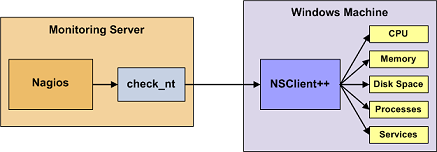
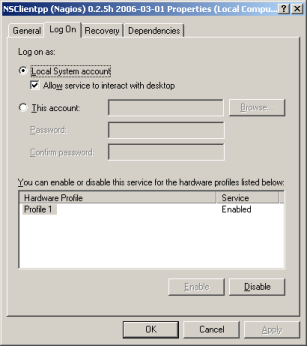

Up To: Contents
Up To: Contents
 See Also: Quickstart Installation Guide, Monitoring Publicly Available Services
See Also: Quickstart Installation Guide, Monitoring Publicly Available Services
Introduction
This document describes how you can monitor "private" services and attributes of Windows machines, such as:
Publicly available services that are provided by Windows machines (HTTP, FTP, POP3, etc.) can be monitored easily by following the documentation on monitoring publicly available services.
 Note: These instructions assume that you've installed Nagios according to the quickstart guide. The sample configuration entries below reference objects that are defined in the sample config files (commands.cfg, templates.cfg, etc.) that are installed if you follow the quickstart.
Note: These instructions assume that you've installed Nagios according to the quickstart guide. The sample configuration entries below reference objects that are defined in the sample config files (commands.cfg, templates.cfg, etc.) that are installed if you follow the quickstart.
Overview
Monitoring private services or attributes of a Windows machine requires that you install an agent on it. This agent acts as a proxy between the Nagios plugin that does the monitoring and the actual service or attribute of the Windows machine. Without installing an agent on the Windows box, Nagios would be unable to monitor private services or attributes of the Windows box.
For this example, we will be installing the NSClient++ addon on the Windows machine and using the check_nt plugin to communicate with the NSClient++ addon. The check_nt plugin should already be installed on the Nagios server if you followed the quickstart guide.
Other Windows agents (like NC_Net) could be used instead of NSClient++ if you wish - provided you change command and service definitions, etc. a bit. For the sake of simplicity I will only cover using the NSClient++ addon in these instructions.
Steps
There are several steps you'll need to follow in order to monitor a new Windows machine. They are:
What's Already Done For You
To make your life a bit easier, a few configuration tasks have already been done for you:
The above-mentioned config files can be found in the /usr/local/nagios/etc/objects/ directory. You can modify the definitions in these and other definitions to suit your needs better if you'd like. However, I'd recommend waiting until you're more familiar with configuring Nagios before doing so. For the time being, just follow the directions outlined below and you'll be monitoring your Windows boxes in no time.
Prerequisites
The first time you configure Nagios to monitor a Windows machine, you'll need to do a bit of extra work. Remember, you only need to do this for the *first* Windows machine you monitor.
Edit the main Nagios config file.
vi /usr/local/nagios/etc/nagios.cfg
Remove the leading pound (#) sign from the following line in the main configuration file:
#cfg_file=/usr/local/nagios/etc/objects/windows.cfg
Save the file and exit.
What did you just do? You told Nagios to look to the /usr/local/nagios/etc/objects/windows.cfg to find additional object definitions. That's where you'll be adding Windows host and service definitions. That configuration file already contains some sample host, hostgroup, and service definitions. For the *first* Windows machine you monitor, you can simply modify the sample host and service definitions in that file, rather than creating new ones.
Installing the Windows Agent
Before you can begin monitoring private services and attributes of Windows machines, you'll need to install an agent on those machines. I recommend using the NSClient++ addon, which can be found at http://sourceforge.net/projects/nscplus. These instructions will take you through a basic installation of the NSClient++ addon, as well as the configuration of Nagios for monitoring the Windows machine.
1. Download the latest stable version of the NSClient++ addon from http://sourceforge.net/projects/nscplus
2. Unzip the NSClient++ files into a new C:\NSClient++ directory
3. Open a command prompt and change to the C:\NSClient++ directory
4. Register the NSClient++ system service with the following command:
nsclient++ /install
5. Install the NSClient++ systray with the following command ('SysTray' is case-sensitive):
nsclient++ SysTray
6. Open the services manager and make sure the NSClientpp service is allowed to interact with the desktop (see the 'Log On' tab of the services manager). If it isn't already allowed to interact with the desktop, check the box to allow it to.

7. Edit the NSC.INI file (located in the C:\NSClient++ directory) and make the following changes:
8. Start the NSClient++ service with the following command:
nsclient++ /start
9. If installed properly, a new icon should appear in your system tray. It will be a yellow circle with a black 'M' inside.
10. Success! The Windows server can now be added to the Nagios monitoring configuration...
Configuring Nagios
Now it's time to define some object definitions in your Nagios configuration files in order to monitor the new Windows machine.
Open the windows.cfg file for editing.
vi /usr/local/nagios/etc/objects/windows.cfg
Add a new host definition for the Windows machine that you're going to monitor. If this is the *first* Windows machine you're monitoring, you can simply modify the sample host definition in windows.cfg. Change the host_name, alias, and address fields to appropriate values for the Windows box.
define host{
use windows-server ; Inherit default values from a Windows server template (make sure you keep this line!)
host_name winserver
alias My Windows Server
address 192.168.1.2
}
Good. Now you can add some service definitions (to the same configuration file) in order to tell Nagios to monitor different aspects of the Windows machine. If this is the *first* Windows machine you're monitoring, you can simply modify the sample service definitions in windows.cfg.
Note: Replace "winserver" in the example definitions below with the name you specified in the host_name directive of the host definition you just added.
Add the following service definition to monitor the version of the NSClient++ addon that is running on the Windows server. This is useful when it comes time to upgrade your Windows servers to a newer version of the addon, as you'll be able to tell which Windows machines still need to be upgraded to the latest version of NSClient++.
define service{
use generic-service
host_name winserver
service_description NSClient++ Version
check_command check_nt!CLIENTVERSION
}
Add the following service definition to monitor the uptime of the Windows server.
define service{
use generic-service
host_name winserver
service_description Uptime
check_command check_nt!UPTIME
}
Add the following service definition to monitor the CPU utilization on the Windows server and generate a CRITICAL alert if the 5-minute CPU load is 90% or more or a WARNING alert if the 5-minute load is 80% or greater.
define service{
use generic-service
host_name winserver
service_description CPU Load
check_command check_nt!CPULOAD!-l 5,80,90
}
Add the following service definition to monitor memory usage on the Windows server and generate a CRITICAL alert if memory usage is 90% or more or a WARNING alert if memory usage is 80% or greater.
define service{
use generic-service
host_name winserver
service_description Memory Usage
check_command check_nt!MEMUSE!-w 80 -c 90
}
Add the following service definition to monitor usage of the C:\ drive on the Windows server and generate a CRITICAL alert if disk usage is 90% or more or a WARNING alert if disk usage is 80% or greater.
define service{
use generic-service
host_name winserver
service_description C:\ Drive Space
check_command check_nt!USEDDISKSPACE!-l c -w 80 -c 90
}
Add the following service definition to monitor the W3SVC service state on the Windows machine and generate a CRITICAL alert if the service is stopped.
define service{
use generic-service
host_name winserver
service_description W3SVC
check_command check_nt!SERVICESTATE!-d SHOWALL -l W3SVC
}
Add the following service definition to monitor the Explorer.exe process on the Windows machine and generate a CRITICAL alert if the process is not running.
define service{
use generic-service
host_name winserver
service_description Explorer
check_command check_nt!PROCSTATE!-d SHOWALL -l Explorer.exe
}
That's it for now. You've added some basic services that should be monitored on the Windows box. Save the configuration file.
Password Protection
If you specified a password in the NSClient++ configuration file on the Windows machine, you'll need to modify the check_nt command definition to include the password. Open the commands.cfg file for editing.
vi /usr/local/nagios/etc/objects/commands.cfg
Change the definition of the check_nt command to include the "-s <PASSWORD>" argument (where PASSWORD is the password you specified on the Windows machine) like this:
define command{
command_name check_nt
command_line $USER1$/check_nt -H $HOSTADDRESS$ -p 12489 -s PASSWORD -v $ARG1$ $ARG2$
}
Save the file.
Restarting Nagios
You're done with modifying the Nagios configuration, so you'll need to verify your configuration files and restart Nagios.
If the verification process produces any errors messages, fix your configuration file before continuing. Make sure that you don't (re)start Nagios until the verification process completes without any errors!